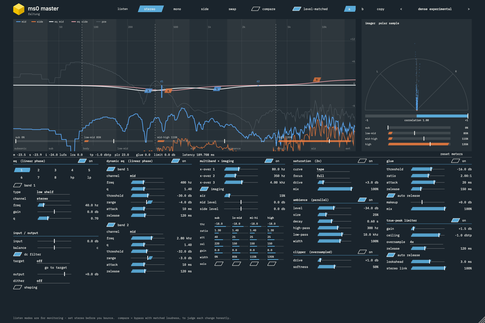
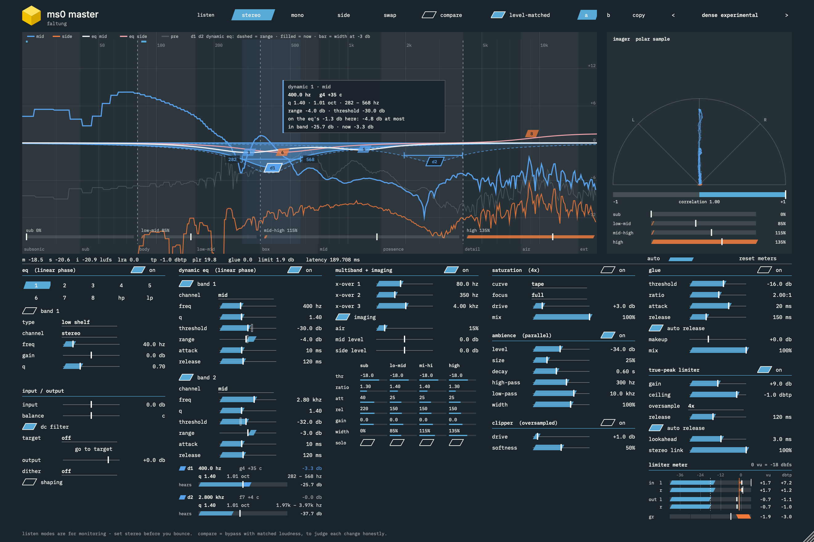
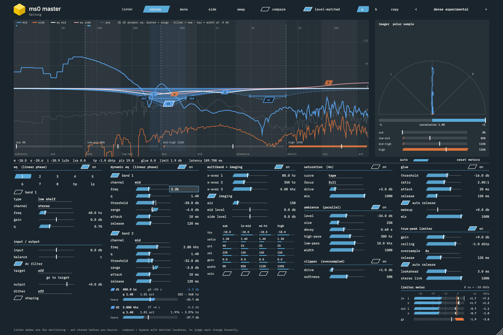

faltung · linear-phase mastering bus · manual
A mastering bus for two kinds of work: the tight, dry, wide-but-centred sound of 2000s microhouse, and dense experimental and electroacoustic music that reaches from the lowest lows to the highest highs. The aim is not maximum loudness or maximum width but spectral separation, depth and controlled stereo, without flattening the density that makes the music what it is.

Everything runs in mid / side. The eq and the band split are linear phase: they change level without smearing the timing of transients or the phase between frequencies, which is why the plug-in has about 190 ms of latency (8192-tap filters at 48 khz, longer filters at higher rates so the resolution stays the same). Ableton compensates automatically. With every stage neutral the output equals the input to within 135 db — the test suite checks this. Eq and dynamic eq frequencies can be automated: while playing, the filters follow a few hundredths of a second behind; in an offline bounce they are redesigned in step with the audio, so the move lands where it is drawn.
Two bands that act only while the level inside them is above their threshold. Each is drawn in the analyser, in the colour of its channel (mid blue, side orange, stereo white), as the bell it really has — measured from the filter that runs, not from a formula:

| on a point (d1, d2) | does |
|---|---|
| drag | left / right: frequency · up / down: range |
| shift | ten times finer, for any of these drags |
| alt-drag, or the wheel | q: up = narrower (shift + wheel: steps of 2%) |
| cmd-drag (ctrl on Windows / Linux) | threshold |
| double-click | type the frequency |
| right-click | channel · type the frequency, q, threshold or range · band on / off |

While the mouse is on a point, or drags it, a read-out stands beside it: the frequency to a tenth of a hertz and the note it is, the q, the width in octaves, the two edges, range and threshold, the level in the band and the change at this moment. The eq's points show theirs the same way.
Under the sliders the same numbers stay in view for both bands. hears is the level inside the band on a -60 … 0 db scale, the mark is the threshold; whatever is over the threshold is drawn in the band's colour — that is when the band works. The hollow ticks on the threshold and range sliders show the same two things (level in the band, gain now) where you set them.
The picture tells two things the numbers alone do not:
Every slider's value can be typed: double-click the number at the right of the slider (double-clicking the bar still returns it to its default). A small field opens with the value selected; return, or a click anywhere else, applies it; escape leaves it as it was. The picture shows the field over dynamic band 1's frequency. In the analyser, double-click a point to type its frequency; under the dynamic eq, double-click a frequency or a q.
| kind | what you can type |
|---|---|
| frequency | 850 · 850 hz · 1.2k · 2k5 · 12.5 khz · a bare number under the range is khz
(2.8 = 2.8 khz) · a note: a4 c#3 bb2, with cents if you like: a4 +20 |
| level, q, ratio | the number: -4.5 · -4.5 db · 2.5 · 2.5:1 |
| percent | 115 or 115% |
| time | 20 · 20 ms · 0.02 s |
| balance | c · l 20 · r 20 |
A value outside the range stops at the end of the range. A typed value is one automation gesture, like a drag.
Gain → clipper → limiter, both running oversampled (2×, 4× or 8×, linear-phase half-band filters), then a short true-peak safety stage at the normal rate that catches anything the down-sampling filters add back. The limiter never acts late: a sliding minimum plus a box-car average over the look-ahead window guarantees the gain is already down when a peak arrives. Release is program dependent in auto (fast after short peaks, slower when it is held). Measured on a drum loop pushed 18 db into it, the output stays at -1.000 dbtp with oversampling off, 2× and 4×, and -0.999 dbtp at 8× with the clipper. A clipper before the limiter is the usual way to get loudness with fewer audible limiter movements; keep it at 1 – 3 db.
Under the limiter. Four rows: in — after the limiter's gain, so what the limiter is asked to hold — left and right, and out, left and right.
The bar is a VU meter: the average level through the classic 300 ms needle. Measured: it shows 99% of a tone 301 ms after the tone starts, overshoots by 1.25%, and is back 301 ms after it stops (the standard asks for 300 ms ± 10% and 1 – 1.5%); a sine reads its own level within 0.01 db from 100 hz to 10 khz, at 44.1, 48 and 96 khz. The number beside the bar is in vu: 0 vu is the reference level written at the top right, -18 dbfs to start with (a -18 dbfs sine reads 0.0 vu), and the dashed line. Click the reference to choose -24 … -6 dbfs: for a loud club master take -12 or -10, so the bar plays around the dashed line. The reference is kept with the session; it is not a parameter.
The short mark is the true peak (4× interpolated), falling back 20 db in 1.7 s; the tall thin mark holds the highest for 2 s and the dbtp number is that held peak. The orange line is the ceiling. On the way in, peaks beyond it are drawn orange: that is what the limiter has to take off. On the way out nothing passes it.
gr is the gain reduction, growing from the right (12 db across, a tick every 3), with its own 2 s hold; the two numbers are the reduction now and the deepest held. reset meters clears the holds.
Reading it: the peaks tell you whether the ceiling holds, the vu bars what happened to the body of the sound. If out reads clearly less vu than in, the limiter is working on the body and not only on the peaks: take some gain back, or let the clipper have the first 1 – 3 db.
a and b hold two complete settings; click to switch, copy copies the current one to the other. compare plays the input instead (level-matched when level-matched is on). Choose a target (−14 lufs for streaming, −9 for club …), play the whole song once so the integrated loudness is measured, then go to target sets the limiter gain to reach it. For your music the target is often off: loudness range matters more than a number.
Click it to switch between three views. Polar sample (as in Ozone Imager): every sample is a dot; mono material stands on the vertical line, hard left and right on the diagonals, out-of-phase material lies along the horizontal. Dots outside the diagonals mean more side than mid. Polar level: the energy at each angle as rays. Lissajous: the classic goniometer. Below: the correlation (+1 mono, 0 wide, below 0 phase trouble that will vanish in mono) and, for each band, the measured width (orange) against the width you set (white mark). The same per-band width bars appear in the analyser under each band.
The line under the analyser: momentary, short-term and integrated loudness (BS.1770 / EBU R128, gated), lra (loudness range, EBU Tech 3342), the distance to the target, true peak (4× interpolated), plr (peak to loudness ratio — how much dynamic punch is left), gain reduction of glue and limiter, and the latency. reset meters clears integrated loudness, loudness range and the peak holds, the limiter meter's too.
ms0 was tuned on the ten final mixes in Sadnoise_Cloudfin_Dreamstate / final wavs, measured with its own meters:
| what | found | what ms0 does about it |
|---|---|---|
| true peak | five tracks above 0 dbtp: track 9 +3.7, track 10 +2.3, track 1 +2.1, track 12 +0.7, track 4 +0.4 | oversampled limiter + true-peak safety at -1 dbtp |
| loudness | -10.8 … -15.7 lufs, lra 6 – 13 lu, crest 11 – 18 db: very dynamic | gentle presets, lra and plr meters, target usually off |
| extreme lows | much energy under 30 hz (track 9, 4, 11, 1) | dc filter; a 15 hz linear-phase high-pass in the dreamstate preset that leaves 20 – 40 hz alone |
| wide sub | sub side-width 0.50 (track 5), 0.41 (track 10), 0.30 (track 1) | sub band at 0% width: the low end survives mono and club systems |
| very wide overall | correlation 0.26 (track 8), 0.48 (track 5), 0.49 (track 12) | the imager, per-band width, mid / side levels |
| side low-mid mud | side energy at 160 – 350 hz high in tracks 5, 8, 12 | a side cut at 300 hz and a dynamic side band at 320 hz |
Track 9 through dreamstate (from your mixes): -15.7 → -14.9 lufs, loudness range 12.8 → 11.4 lu, true peak +3.69 → -1.00 dbtp.
| transparent | only the limiter at -1 dbtp. The starting point: switch stages on one at a time and keep only those that help |
| microhouse club | subsonic high-pass, a little low-mid out of the centre, side mud cleared, side air, sub mono and widening above, tape saturation on the lows, light glue, +4 db into the limiter |
| dense experimental | no high-pass (your lows stay), mid cuts at 300 hz and 1.2 khz, side cut at 450 hz, side air, two dynamic mid bands at 400 hz and 2.8 khz, gentle bands, widths 0 / 85 / 115 / 135%, air, a very quiet room, no glue, light limiting |
| electroacoustic, dynamic | almost nothing: a dynamic band catching harshness around 3.5 khz, the sub narrowed, slow limiter release. Keeps the full dynamic range |
| wide air, deep space | side high shelf, wide top band with air, a quiet room for depth |
| mono-safe low end | everything under 110 hz mono, low-mids half width, side high-pass at 120 hz |
| loud club | firmer bands, soft-clip saturation focused on the ends, glue, +7 db into the limiter with a short lookahead |
| vinyl pre-master | high- and low-pass, everything under 150 hz mono, low-mids narrowed, ceiling -1.5 dbtp, no limiting gain |
| dreamstate (from your mixes) | made from the analysis of your ten mixes: 15 hz linear-phase high-pass, side cut at 300 hz, a little centre cut at 460 hz, side air, dynamic mid band at 250 hz and side band at 320 hz, sub mono, very gentle bands, no glue, a light soft clipper, 8× oversampled limiter at -1 dbtp with +2 db |
| 16-bit export | transparent, with 16-bit TPDF dither and noise shaping for CD / 16-bit delivery |
Presets never change listen, compare or input trim.
| control | range | default | what it does |
|---|---|---|---|
| input trim | -24.0 db … +24.0 db | 0.0 db | input level. Aim for peaks around -6 dbfs into the chain |
| listen | stereo, mono, side, swap | stereo | monitoring only: stereo · mono (sum) · side (the difference) · swap (L / R). Set stereo before you bounce |
| compare (bypass) | off / on | off | compare: hear the input instead (delayed to match the latency) |
| level-matched compare | off / on | on | during compare, the input is level-matched to the output (short-term loudness), so louder never wins by default |
| dc filter | off / on | on | removes dc offset (a 3 hz high-pass, far below anything musical) |
| balance | l 100 … r 100 | c | left / right balance at the input |
| loudness target | off, -8 lufs, -9 lufs (club), -10 lufs, -11 lufs, -12 lufs, -14 lufs (streaming), -16 lufs (apple), -18 lufs (dynamic), -23 lufs (broadcast) | off | a loudness goal; the meter line shows how far the integrated loudness is from it |
| eq on | off / on | on | switch the whole linear-phase eq (stays at the same latency) |
| eq 1 on | off / on | off | band on |
| eq 1 type | bell, low shelf, high shelf, notch | low shelf | bell · low shelf · high shelf · notch |
| eq 1 freq | 20.0 hz … 20.0 khz | 40.0 hz | centre or corner frequency |
| eq 1 gain | -18.0 db … +18.0 db | 0.0 db | boost or cut |
| eq 1 q | 0.10 … 18.00 | 0.70 | width: low = broad, high = narrow (1.41 = one octave between the -3 db edges, 4.3 = a third of an octave) |
| eq 1 channel | stereo, mid, side | stereo | stereo (both) · mid (the centre) · side (the edges) |
| high-pass on | off / on | off | high-pass on |
| high-pass freq | 10.0 hz … 500 hz | 22.0 hz | high-pass corner |
| high-pass slope | 12 db, 24 db, 48 db, 96 db | 24 db | 12 – 96 db / octave |
| high-pass channel | stereo, mid, side | stereo | which part it acts on (side = remove lows from the edges only) |
| low-pass on | off / on | off | low-pass on |
| low-pass freq | 2.00 khz … 22.0 khz | 20.0 khz | low-pass corner |
| low-pass slope | 12 db, 24 db, 48 db, 96 db | 24 db | 12 – 96 db / octave |
| low-pass channel | stereo, mid, side | stereo | which part it acts on |
| dynamic eq on | off / on | on | switch both dynamic bands |
| dyn 1 on | off / on | off | band on |
| dyn 1 channel | stereo, mid, side | mid | stereo (both) · mid (the centre) · side (the edges) |
| dyn 1 freq | 20.0 hz … 20.0 khz | 400 hz | centre or corner frequency |
| dyn 1 q | 0.30 … 12.00 | 1.40 | width: low = broad, high = narrow (1.41 = one octave between the -3 db edges, 4.3 = a third of an octave) |
| dyn 1 threshold | -60.0 db … 0.0 db | -30.0 db | level inside the band at which it starts acting (the hears bar shows that level) |
| dyn 1 range | -18.0 db … +12.0 db | -4.0 db | maximum cut (negative) or boost (positive); the dashed bell in the analyser |
| dyn 1 attack | 0.5 ms … 100 ms | 10 ms | how fast it reacts |
| dyn 1 release | 10 ms … 1000 ms | 120 ms | how fast it lets go |
| dyn 2 on | off / on | off | band on |
| dyn 2 channel | stereo, mid, side | mid | stereo (both) · mid (the centre) · side (the edges) |
| dyn 2 freq | 20.0 hz … 20.0 khz | 3.00 khz | centre or corner frequency |
| dyn 2 q | 0.30 … 12.00 | 1.40 | width: low = broad, high = narrow (1.41 = one octave between the -3 db edges, 4.3 = a third of an octave) |
| dyn 2 threshold | -60.0 db … 0.0 db | -30.0 db | level inside the band at which it starts acting (the hears bar shows that level) |
| dyn 2 range | -18.0 db … +12.0 db | -4.0 db | maximum cut (negative) or boost (positive); the dashed bell in the analyser |
| dyn 2 attack | 0.5 ms … 100 ms | 10 ms | how fast it reacts |
| dyn 2 release | 10 ms … 1000 ms | 120 ms | how fast it lets go |
| multiband on | off / on | on | switch the band compression (the split and widths stay) |
| crossover 1 | 30.0 hz … 300 hz | 80.0 hz | sub / low-mid crossover |
| crossover 2 | 150 hz … 2.00 khz | 350 hz | low-mid / mid-high crossover |
| crossover 3 | 1.00 khz … 12.0 khz | 4.00 khz | mid-high / high crossover |
| sub threshold | -60.0 db … 0.0 db | -18.0 db | level inside the band at which it starts acting (the hears bar shows that level) |
| sub ratio | 1.00:1 … 4.00:1 | 1.50:1 | compression ratio, keep it 1.2 – 2 |
| sub attack | 1.0 ms … 200 ms | 40 ms | how fast it reacts |
| sub release | 20 ms … 1000 ms | 220 ms | how fast it lets go |
| sub gain | -12.0 db … +12.0 db | 0.0 db | boost or cut |
| sub width | 0% … 200% | 0% | stereo width of the band: 0% mono, 100% as is, 200% doubled side |
| sub solo | off / on | off | hear only the soloed bands |
| imaging on | off / on | on | switch the per-band widths |
| air (top-band width) | 0% … 100% | 0% | adds a decorrelated copy of the top band's centre to its sides: width for mono highs, no transient smear below the top crossover |
| mid level | -12.0 db … +12.0 db | 0.0 db | level of the centre after imaging |
| side level | -12.0 db … +12.0 db | 0.0 db | level of the sides after imaging |
| saturation on | off / on | off | saturation on |
| saturation curve | tape, tube, soft clip, smooth | tape | tape · tube · soft clip · smooth |
| saturation focus | full, lows, highs, ends (avoid 200-2k) | full | where the harmonics are generated: full · lows · highs · ends (leaves 200 hz – 2 khz alone) |
| saturation drive | 0.0 db … +18.0 db | +3.0 db | drive into the curve (level-compensated) |
| saturation mix | 0% … 100% | 100% | parallel: dry / saturated |
| ambience on | off / on | off | ambience on |
| ambience level | -60.0 db … -6.0 db | -30.0 db | level of the parallel room, keep it very quiet |
| ambience size | 0% … 100% | 30% | room size |
| ambience decay | 0.10 s … 3.00 s | 0.60 s | tail length |
| ambience high-pass | 40.0 hz … 1.00 khz | 300 hz | high-pass on the room |
| ambience low-pass | 2.00 khz … 20.0 khz | 10.0 khz | low-pass on the room |
| ambience width | 0% … 150% | 100% | stereo width of the room |
| glue on | off / on | on | glue on |
| glue threshold | -40.0 db … 0.0 db | -16.0 db | threshold |
| glue ratio | 1.00:1 … 4.00:1 | 2.00:1 | ratio |
| glue attack | 0.1 ms … 50 ms | 20 ms | attack |
| glue release | 50 ms … 1200 ms | 150 ms | release |
| glue auto release | off / on | on | program-dependent release |
| glue makeup | -6.0 db … +12.0 db | +0.0 db | makeup gain |
| glue mix | 0% … 100% | 100% | parallel mix |
| clipper on | off / on | off | clipper on |
| clipper drive | 0.0 db … +12.0 db | +1.0 db | gain into the clipper; it clips at the ceiling, the limiter catches the rest |
| clipper softness | 0% … 100% | 50% | 0% hard clip … 100% very soft knee |
| limiter on | off / on | on | limiter on |
| limiter oversampling | off, 2x, 4x, 8x | 4x | off · 2x · 4x · 8x: the clipper and limiter run at this rate, so peaks between samples are caught where they happen and the clipping does not alias. Latency does not change between settings |
| limiter stereo link | 0% … 100% | 100% | 100% both channels share one gain (stable image); lower lets each side limit on its own |
| limiter gain | 0.0 db … +18.0 db | 0.0 db | drive into the limiter |
| ceiling (true peak) | -6.0 dbtp … 0.0 dbtp | -1.0 dbtp | maximum true peak (inter-sample peaks included) |
| limiter release | 10 ms … 1000 ms | 120 ms | release |
| limiter auto release | off / on | on | fast release after short peaks, slower when held |
| limiter lookahead | 0.5 ms … 5.0 ms | 3.0 ms | attack window (latency stays fixed at 5 ms) |
| output | -24.0 db … +6.0 db | +0.0 db | output level (before dither) |
| dither | off, 24 bit, 16 bit | off | TPDF dither for 24 or 16 bit export; off for 32-bit float |
| noise shaping | off / on | off | first-order noise shaping (pushes dither noise up in frequency) |
eq bands 2 – 8 work like band 1 and multiband bands 2 – 4 like the sub band; every one of them is its own automatable parameter (eq 5 gain, high width …).
Bounce at the project's sample rate as 24-bit (dither 24) or 32-bit float (dither off). For 16-bit delivery, set dither to 16 bit; nothing after ms0 should change the level.